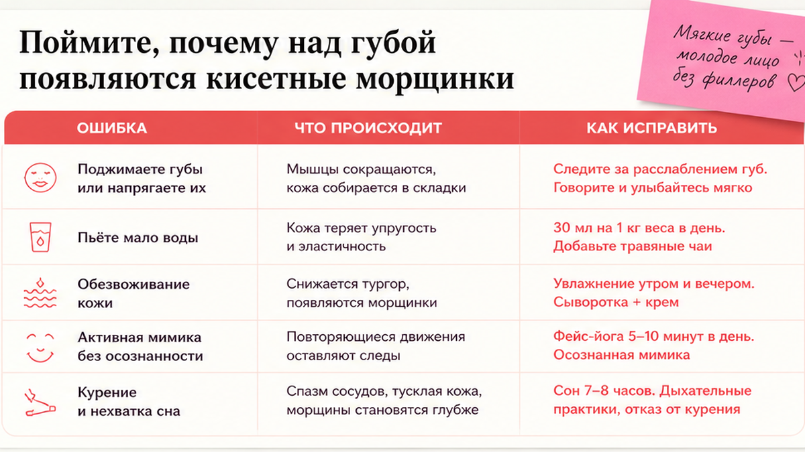
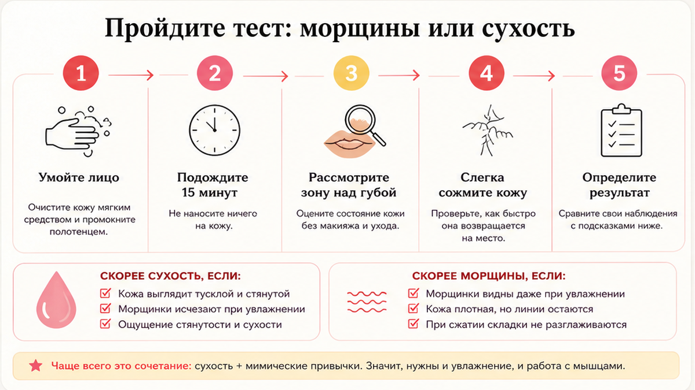
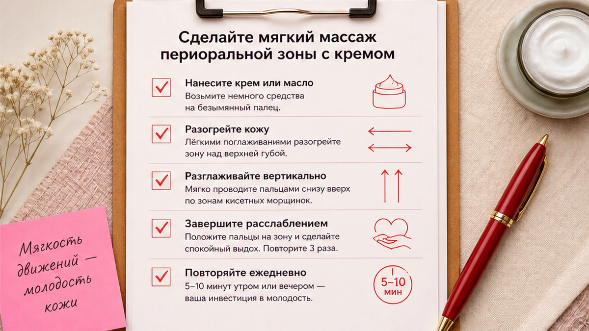

Кисетные морщины над губой часто пугают сильнее, чем заслуживают: кажется, что губы «сдуло», и хочется сразу к филлерам. На деле это часто сухость, привычка дуть губами и мелкая мимика вокруг рта — а не потеря объёма за одну ночь. Если вы ищете, как убрать кисетные морщины над верхней губой дома, важнее связка: понять причину, пройти короткий тест, сделать мягкий массаж с кремом и упражнения без перетяжки — без обещаний «минус десять лет» и без замены консультации врача.
Кисетные морщинки — вертикальные линии над красной каймой губы. Они не равны «пропавшему объёму»: линии смягчаются от увлажнения, массажа и привычек, а объём губ домашними упражнениями не «накачивается» как филлером. Давление в массаже — 2-3 из 10. Первые изменения по ощущениям — обычно через 2-3 недели регулярности.
Я смотрю на зону над губой как на тонкую кожу, которая быстро показывает сухость и привычки. Когда клиентка говорит «губы стали тоньше» — мы сначала смотрим: курит ли, пьёт ли через трубочку, умывается ли агрессивной пенкой, есть ли SPF на губах. Ниже — почему появляются «кисетные», как отличить их от обезвоживания, пошаговый массаж с кремом и упражнения без перетяжки. Если вы уже пробовали только бальзам и не увидели эффекта — скорее всего, не хватило регулярности и работы с привычками, а не «слабого» средства.

«Кисетные» — это не медицинский диагноз, а бытовое название вертикальных мелких складок прямо над верхней губой. Их часто путают с носогубными складками — но те идут от крыла носа к уголкам рта, а кисетные сидят над красной каймой, как «насечки» на листе.
Кожа здесь тонкая, с мало жировой подушки. Круговая мышца губ (та, что сжимает и вытягивает рот) работает каждый день: мы говорим, пьём, дуем, курим, тянем соломинку. С годами кожа медленнее удерживает влагу — линии закрепляются даже в покое. Это не «сломанные» губы, а зона, которая первой реагирует на сухой воздух, солнце и повторяющуюся мимику.
Частые триггеры: курение и соломинка (повторяющийся «обжим»), сухой воздух и отсутствие бальзама, активная мимика «duck face» на фото, сон лицом в подушку, солнце без защиты губ, резкое похудение (кожа не успевает подтянуться), частое использование матовой помады без барьера под неё.
Курение и соломинка буквально «штрихуют» одни и те же вертикальные линии сотни раз в день. Даже если вы бросили курить давно, привычка поджимать губы при стрессе может оставаться — и линии не исчезают сами, пока мышца не учится отдыхать. Соломинка даёт тот же эффект: губы собраны в трубочку, кожа над ними мнётся.
Делайте: отделяйте «линии над губой» от «мне нужен объём губ». Не делайте: ждать, что один крем стирает глубокие заломы за три дня. Проверьте: после душа линии бледнеют, когда наносите бальзам? Это часто сухость + поверхностные заломы, а не «пропавший филлер».
Филлеры и ботокс в зону над губой — инструмент косметолога с показаниями и рисками. Домашний протокол другой: мы поддерживаем барьер кожи, учим мышцу не перенапрягаться и не тянуть губы в привычке. Медленнее, зато без зависимости от календаря инъекций. Объём губ и линии над губой связаны визуально — когда кожа сухая, красная кайма кажется «тоньше» — но это не значит, что упражнения «надувают» губу как гиалуронка.
Если параллельно беспокоит межбровный залом, посмотрите материал про межбровный залом и расслабление — зона рта и «собранное» лицо часто работают вместе. Когда лицо постоянно «собрано», страдает не только лоб, но и рот.

Перед массажем полезно понять, насколько зона обезвожена. Тест занимает минуту и экономит недели разочарования от «не того» ухода.
Чеклист самопроверки:
Как читать результат: если бальзам-тест и тактильный тест «за сухость», первые две недели — только барьер, SPF и мягкий массаж без скрабов. Если линии глубокие даже на напитанной коже — добавляйте упражнения на расслабление, но не ждите полного исчезновения старых заломов за месяц.
Миниплан на 7 дней: бальзам после умывания → отказ от соломинки/курения на пробу → вечерний массаж с кремом → SPF на губы днём → одна неделя без скраба над губой.

Массаж не «выкачивает» губу, но улучшает микроциркуляцию и помогает крему работать. Работайте на чистой коже с каплей крема для лица или губ. Лучшее время — через 30-60 минут после ужина, когда вы не будете есть и не намазали зону активными кислотами.
Я использую дневной или ночной крем из линии Моя косметика — текстура скользит, без спирта в первые недели протокола. На губы сверху — бальзам или тот же крем тонким слоем, без втирания «до жжения». На весь протокол хватит горошины крема на зону над губой — больше не значит быстрее.
Частота: 5 вечеров в неделю, 5-7 минут. Утром — только бальзам и SPF на губы, без глубокого массажа. После процедуры не наносите сразу кислоты или ретинол — дайте коже «уснуть» с барьером.
Ошибка — тереть зону «чтобы быстрее». Кожа над губой краснеет надолго, линии визуально глубже. Если покраснение держится больше 30 минут — уменьшите давление вдвое. Второй частый промах — массаж по сухой коже: пальцы тянут, появляются микротрещины. Всегда скользящий слой крема или масла.
Упражнения здесь — не «качать губы», а снять лишний тонус и научить рот не сжиматься по привычке. Перетяжка только углубляет линии: если после «буквы О» губы дрожат или болят — вы перестарались.
Частота: через день, лучше утром или днём, не сразу после кислот или скраба. Два дня в неделю — только массаж, без упражнений. Не делайте комплекс при воспалении, свежем пилинге или если зона болит после вчерашнего массажа — дайте коже день покоя.
Удобный якорь: после чистки зубов утром — «губы в покое» 30 секунд. Так упражнение не «выпадает» из дня. Вечером, наоборот, только массаж — не смешивайте оба блока в один приём, иначе мышца устаёт и снова зажимается.
Массаж работает быстрее, когда убираете повторения, которые «штрихуют» кисетные каждый день. Один вечерний ритуал без отказа от соломинки — как мыть пол, пока в доме песок с улицы.
Делайте: бальзам после каждого умывания. Не делайте: матовую помаду на весь день без бальзама под неё. Избегайте: курения и соломинки хотя бы на 21 день протокола — увидите разницу по сухости.
Миниплан: бальзам → SPF → вечерний массаж → без соломинки → мягкий крем из Моя косметика.
Зона над губой быстро краснеет от перебора активов. Задача — увлажнение и барьер, пока идёт протокол. Ретинол и кислоты можно вернуть позже, когда кожа перестанет «гореть» от массажа и бальзам держится весь день без стянутости.
| Ошибка | Что происходит | Как исправить |
|---|---|---|
| Скраб над губой каждый день | Раздражение, линии глубже | Не чаще 1 раза в 7-10 дней, очень мягко |
| Кислоты + массаж в один вечер | Жжение, отёк | Разнести: кислоты в один день, массаж в другой |
| Матовая помада без ухода | Сухость и «сеточка» | Бальзам под помаду, снятие мягким средством |
| Ждать объём как у филлера | Разочарование | Цель — смягчить линии и уход, не «новые губы» |
| Только инъекция, без привычек | Линии возвращаются | Параллельно бальзам, SPF, массаж |
| Ретинол каждый вечер на всё лицо «включая губы» | Шелушение, трещины на кайме | Ретинол выше губ, на периоральную зону — только барьер первые 3-4 недели |
Подберите текстуру под тип кожи через короткую диагностику — для сухой зоны над губой часто достаточно плотного бальзама и крема без спирта. Если кожа жирная на щеках, но сухая над губой — это нормально: там почти нет сальных желёз, нужен отдельный барьер, а не «лёгкий гель для всего лица».
Я не против филлеров как инструмента — я против ожидания, что они заменят уход и привычки. Инъекции уместны, когда нужен быстрый визуальный эффект к событию и когда врач после осмотра считает это безопасным. Но без SPF, бальзама и работы с соломинкой линии вернутся — филлер не отменяет мимику.
Домашний протокол уместен, если вы готовы к 3-4 неделям регулярности и хотите смягчить линии без уколов. Глубокие стойкие заломы полностью «стереть» дома нереалистично, но их можно сделать менее заметными и не углублять ежедневными привычками. Ведите простой дневник: раз в неделю одно фото при дневном свете — так видно прогресс лучше, чем в зеркале каждый день.
Обратитесь к врачу, если зона воспалена, есть герпес в активной фазе, аллергия на крем, или домашние техники вызывают боль и отёк. Также к врачу — если линии резко углубились за месяц без смены привычек: это повод исключить другие причины, а не «давить сильнее» массажем.
Достоверность: рекомендации носят оздоровительно-косметический характер и не заменяют консультацию врача. Решение об инъекциях — только с лицензированным специалистом после очного осмотра.
Мелкие линии от сухости и мимики часто смягчаются за 3-6 недель бальзама, массажа и упражнений. Глубокие стойкие заломы полностью убрать дома нереалистично, но можно замедлить углубление и сделать их менее заметными на напитанной коже.
Упражнения снимают лишний тонус и улучшают уход, но не дают объём как филлер. Объём и линии над губой — разные задачи. Визуально губы могут казаться «полнее», когда кожа увлажнена и не стянута — это не прирост ткани.
5 вечеров по 5-7 минут, два дня отдыха. Утром — бальзам и SPF, без глубокой проработки.
Нейтральный крем для лица или губ без спирта и без агрессивных кислот на старте. Я использую свою линию Моя косметика — главное, чтобы пальцы скользили без натяжения.
По ощущениям кожа «напитана» часто к 10-14 дню. Визуально мелкие линии мягче к 3-4 неделе при SPF, отказе от соломинки и регулярном уходе. Глубокие линии от курения могут потребовать 6-8 недель только на смягчение, не на исчезновение.
У процедуры есть показания, противопоказания и риски — это вопрос для врача. Домашний протокол про профилактику и смягчение, не про замену клиники.
Нет в активной фазе. Дождитесь полного заживления, иначе разнесёте вирус и усилите раздражение.
Частично. Линии перестают углубляться от «штриховки», но уже существующие заломы без увлажнения и мягкой проработки останутся заметными. Лучший эффект — отказ + барьер + массаж.
Не обязательно отдельный продукт, но обязателен барьер: бальзам для губ и крем без спирта на периоральную зону. Общий «лёгкий» гель для жирной кожи щёк часто не хватает для тонкой кожи над губой.